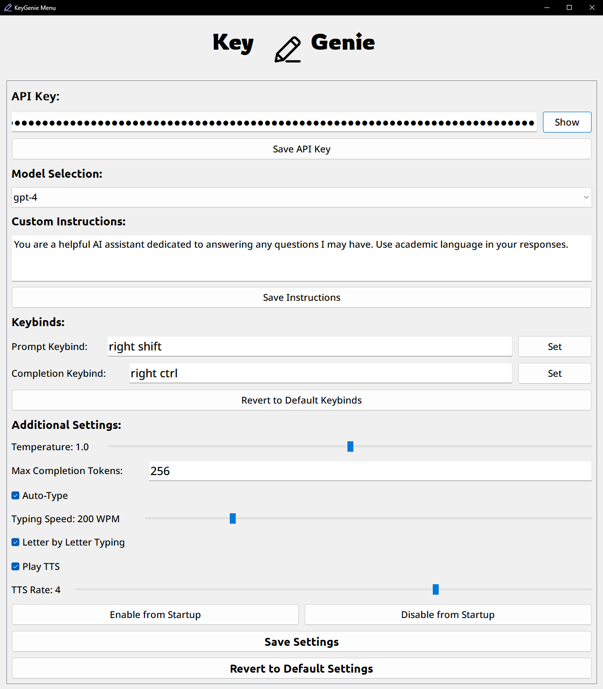
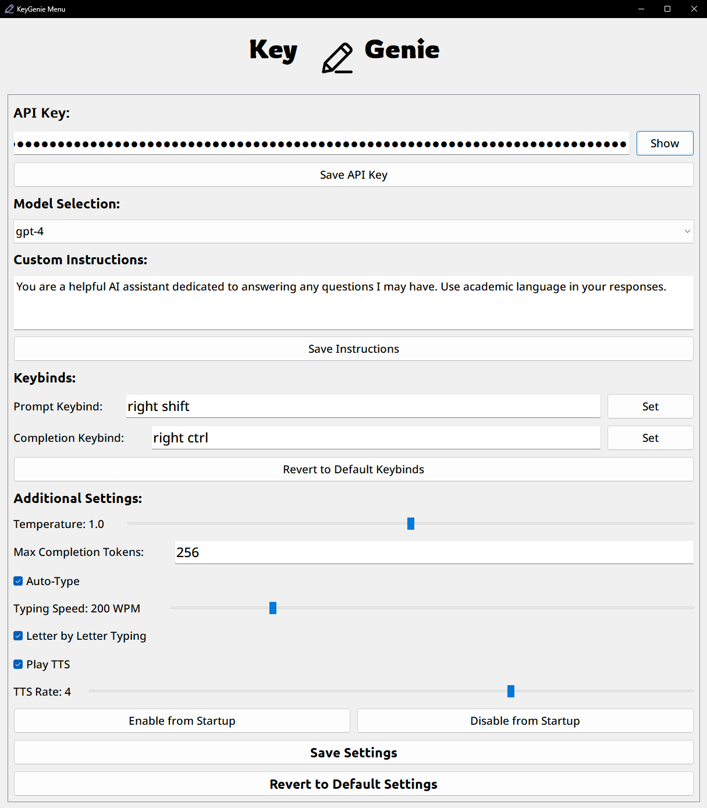

KeyGenie
A productivity-enhancing AI assistant that brings the power of AI directly to your fingertips.
KeyGenie is a powerful AI assistant designed to seamlessly integrate into your existing workflow. By leveraging OpenAI's advanced language models, including GPT-4, KeyGenie provides real-time AI assistance directly from your keyboard, without interrupting your tasks.
 

Installation Instructions
- Download the KeyGenie program using the link below.
- Extract the contents of the ZIP file to a folder on your computer.
- Navigate to the extracted folder and locate run.py.
- Double-click run.py to start the program. If you do not have Python installed, follow the on-screen prompts to install it.
- After Python and the necessary modules are installed, the KeyGenie system tray icon will appear.
- Right-click the icon in the system tray and open the settings to enter your OpenAI API key and customize your experience.
KeyGenie

📑 Table of Contents
Introduction
KeyGenie is a powerful AI assistant designed to seamlessly integrate into your existing workflow. By leveraging OpenAI's advanced language models, including GPT-4, KeyGenie provides real-time AI assistance directly from your keyboard, without interrupting your tasks.
Features
- Real-Time AI Responses: Generate instant responses to any text prompt using OpenAI’s models.
- Text-to-Speech (TTS): Listen to AI-generated responses with customizable speech settings.
- Customizable Keybinds: Set hotkeys to activate AI interactions without leaving your current application.
- Auto-Typing: Automatically type out AI responses at a customizable speed.
- Comprehensive Settings: Adjust temperature, max tokens, response speed, and more.
- System Tray Integration: Runs quietly in the background with easy access from the system tray.
- Effortless Setup: Automatic installation of dependencies for both technical and non-technical users.
Installation
Prerequisites
- Operating System: Windows
- Python 3: Ensure that Python 3 is installed and added to your system's PATH.
To check if Python is installed:
python --version
If Python is not installed, download it from Python's official website.
First-Time Setup
Clone or Download the Repository:
Clone via Git:
git clone https://github.com/yourusername/KeyGenie.gitDownload ZIP:
- Click on the Code button on the GitHub repository page.
- Select Download ZIP.
- Extract the ZIP file to your desired location.
Navigate to the Project Directory:
cd KeyGenieRun the Application:
- Option 1: Double-click
run.py. Option 2: Run from the command line:
python run.py
- Option 1: Double-click
Automatic Dependency Installation:
- On the first run, KeyGenie will automatically install all necessary Python modules.
- A file named
first_run.txtwill be created inside thebrainfolder after setup is complete.
Provide Your OpenAI API Key:
- After running the application, find the KeyGenie icon in your system tray (near the clock).
- Right-click the icon and select Open Settings.
- Enter your OpenAI API key in the API Key field.
- Click Save API Key.
Note: You need a valid OpenAI API key to use this application. Sign up at OpenAI's website if you don't have one.
Usage
Activating KeyGenie
Prompt Mode:
- Press the Prompt Keybind (default is
Right Shift) to start capturing your input. - Type your prompt, and press the keybind again to stop capturing.
- The AI will process your input and type out the response automatically.
- Press the Prompt Keybind (default is
Completion Mode:
- Press the Completion Keybind (default is
Right Ctrl) to start capturing text to be completed. - Type the text you want the AI to continue, and press the keybind again to stop capturing.
- The AI will generate a continuation of your text.
- Press the Completion Keybind (default is
Stopping the AI Typing or TTS:
- Press any key on your keyboard to stop the AI from typing or speaking.
Keybinds
Default Keybinds:
- Prompt Keybind:
Right Shift - Completion Keybind:
Right Ctrl
- Prompt Keybind:
Customizing Keybinds:
- Open the Settings window from the system tray icon.
- Navigate to the Keybinds section.
- Click on Set next to the keybind you wish to change.
- Press the new key you want to assign.
Customizing Settings
Model Selection:
- Choose from various OpenAI models, including GPT-4 and GPT-3.5-turbo.
Custom Instructions:
- Add any custom instructions for the AI in the provided text area in the settings.
Additional Settings:
- Temperature: Controls the randomness of the AI's responses.
- Max Tokens: Limits the length of the AI's responses.
- Auto-Type: Enable or disable automatic typing of AI responses.
- Typing Speed: Adjust how fast the AI types back.
- Letter by Letter Typing: Choose whether the AI types letter by letter or in chunks.
- Play TTS: Enable text-to-speech to have the AI speak responses.
- TTS Rate: Adjust the speaking rate of the AI.
Advanced Configuration
Custom Instructions
- Open the Settings window.
- Navigate to Custom Instructions.
- Enter your instructions in the text area.
- Click Save Instructions.
- These instructions will guide the AI's behavior across all interactions.
Model Selection
- Choose from a list of available OpenAI models.
- Models include:
- GPT-4
- GPT-3.5-Turbo
- GPT-3.5-Turbo-16k
- And more.
- Select the model that best fits your needs from the Model Selection dropdown in Settings.
Typing Speed
- Adjust how fast the AI types back.
- In Settings, adjust the Typing Speed slider.
- Letter by Letter Typing: Enable for a natural typing effect; disable for faster chunk typing.
Text-to-Speech (TTS)
- Enable TTS to have the AI's responses read aloud.
- Adjust the TTS Rate to control speech speed.
- Useful for multitasking or accessibility purposes.
Auto-Start on System Boot
- Enable Startup:
- In Settings, click Enable from Startup.
- This will create a shortcut in your startup folder.
- Disable Startup:
- Click Disable from Startup to remove the startup shortcut.
- Ensures KeyGenie runs automatically when you start your computer.
Detailed Features
Streamlined Workflow Integration
KeyGenie integrates into your existing workflow without interrupting your tasks. It operates in the background and can be summoned with simple key combinations, allowing you to maintain focus while getting AI assistance as needed.
Customizable and Flexible
Tailored to suit your preferences, KeyGenie offers a fully customizable experience. With adjustable keybinds, typing speed, AI model selection, and temperature settings, you have full control over how the AI behaves, ensuring it complements your working style.
Supports Long-Form Content Generation
Whether you're drafting emails, writing essays, or generating code, KeyGenie is capable of handling long-form content. It offers the ability to start and continue writing, providing suggestions or completing text seamlessly as you type.
Lightweight and Non-Intrusive
With its discreet system tray operation, KeyGenie stays out of your way until you need it. Unlike traditional AI tools that require you to switch to a separate interface or window, this tool works directly in any text field you're using.
Use Cases
Creative Writing and Content Generation
Use KeyGenie to generate ideas, write blog posts, or draft essays and reports. The ability to continue and refine your writing makes it a perfect companion for authors and content creators.
Productivity Enhancement
From email drafting to technical writing, KeyGenie can help automate and speed up repetitive tasks by generating text or providing suggestions, allowing you to work more efficiently.
Coding Assistance
Developers can use KeyGenie to generate code snippets, explain functions, or debug issues. The flexibility to switch between natural language and code makes it ideal for any programming environment.
Accessibility Support
With customizable text-to-speech, KeyGenie enhances accessibility for users with visual impairments or those who prefer to listen rather than read.
Folder Structure
KeyGenie/
├── run.py
├── instructions.txt
├── brain/
│ ├── backgroundai.py
│ ├── defaultSettings.json
│ ├── menu.py
│ ├── setup.py
│ ├── NotoSans-Medium.ttf
│ ├── Rowdies-Regular.ttf
│ ├── Ubuntu-Bold.ttf
│ ├── write.ico
│ └── write.png
- run.py: Main launcher script.
- instructions.txt: Detailed user instructions.
- brain/: Contains the core functionality and resources.
- backgroundai.py: Main application script.
- defaultSettings.json: Default configuration settings.
- menu.py: Settings menu implementation.
- setup.py: First-time setup script.
- Fonts: Custom fonts used in the application.
- write.ico / write.png: Application icons.
Detailed Script Descriptions
run.py
The main launcher script that initiates the application. It handles:
First-Time Setup:
- Checks if it's the first run.
- Executes
setup.pyto install dependencies and create necessary files.
Relaunching with pythonw.exe:
- Uses
pythonw.exeto run without a console window.
- Uses
Starting backgroundai.py:
- After setup, it starts the main application script.
def main():
# Check if the script is already being run by pythonw.exe
if "pythonw" not in sys.executable:
relaunch_with_pythonw()
if not os.path.exists(first_run_file):
# First time running the script
run_script('setup.py', use_pythonw=False)
with open(first_run_file, 'w') as f:
f.write("Setup completed")
run_script('backgroundai.py', use_pythonw=True)
else:
run_script('backgroundai.py', use_pythonw=True)
backgroundai.py
The core application script that:
Listens for Keyboard Events:
- Captures prompts based on user-defined keybinds.
Interacts with OpenAI's API:
- Sends prompts and receives AI-generated responses.
Manages System Tray Icon and Settings Menu:
- Provides easy access to settings and controls.
Handles Text-to-Speech and Auto-Typing:
- Types out AI responses or reads them aloud based on settings.
class SystemTrayIcon(QSystemTrayIcon):
def __init__(self, app: QApplication):
super().__init__(app)
# Initialize tray icon and menu
self.setContextMenu(self.menu)
self.show()
menu.py
Implements the settings window using PyQt5:
API Key Input:
- Allows users to enter and save their OpenAI API key.
Customizable Settings:
- Keybinds, model selection, temperature, max tokens, and more.
Startup Management:
- Enables or disables application launch on system startup.
class SettingsWindow(QDialog):
def __init__(self):
super().__init__()
# Initialize UI components
self.init_ui()
setup.py
A script that runs on the first execution to:
Install Required Python Modules:
- Checks for missing modules and installs them.
Create Shortcuts:
- Adds shortcuts to the desktop and startup folder.
Ensure Dependencies are Correctly Set Up:
- Runs post-install scripts for certain packages if necessary.
def install_missing_modules():
for module in required_modules:
if importlib.util.find_spec(module) is None:
subprocess.check_call([sys.executable, "-m", "pip", "install", module])
Troubleshooting
Application Doesn't Start
Ensure Python 3 is Installed:
- Run
python --versionin the command prompt.
- Run
Check Dependencies:
- All dependencies should install automatically.
If not, manually install them:
pip install keyboard openai pyqt5 pywin32
Cannot Find KeyGenie Icon
- It might be hidden in the system tray.
- Click on the Show hidden icons arrow near the system clock.
Permission Issues
- Run the application as an administrator if you encounter permission errors.
Modules Not Installed
- If automatic installation fails, manually install the required modules.
Typing or TTS Doesn't Stop
- Press any key on your keyboard to interrupt the AI's typing or speech.
Known Issues
Compatibility:
- Currently designed for Windows operating systems.
- Compatibility with other OSes is not guaranteed.
API Key Storage:
- The API key is stored locally in your user directory in a folder named
privateVariables. - Ensure the security of your local machine to protect your API key.
- The API key is stored locally in your user directory in a folder named
FAQs
Do I need an OpenAI API key?
Yes, you need a valid OpenAI API key to use KeyGenie. You can obtain one by signing up at OpenAI's website.
Can I use KeyGenie on macOS or Linux?
Currently, KeyGenie is designed for Windows. Compatibility with macOS or Linux is not guaranteed.
How do I stop the AI from typing or speaking?
Press any key on your keyboard to interrupt the AI's typing or text-to-speech.
Where is my API key stored?
Your API key is stored locally in your user directory under privateVariables/apikey.txt.
Can I contribute to KeyGenie?
Yes! Contributions are welcome. Please see the Contributing section.
Contributing
To contribute:
Fork the Project
Click the Fork button at the top-right corner of the repository page.
Create Your Feature Branch
git checkout -b feature/AmazingFeatureCommit Your Changes
git commit -m 'Add some AmazingFeature'Push to the Branch
git push origin feature/AmazingFeatureOpen a Pull Request
License
This project is licensed under the MIT License - see the LICENSE file for details.
Acknowledgments
- OpenAI: For providing the powerful language models.
- PyQt5 and PyWin32: For GUI and Windows API support.
- Contributors: Thanks to everyone who has contributed to this project.
Contact
For support or inquiries, join our Discord server:
Join DiscordThank you for using KeyGenie! We hope it enhances your productivity and brings the power of AI directly to your fingertips.